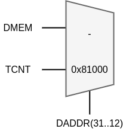

A typical microcontroller has a timer. Although this is a fairly basic component, it has many useful applications. Therefore, adding a timer to your RISC-V microcontroller is the first extension that will be made.
A textbook exercise could be: Toggle a LED roughly every 500 ms and with each fourth period, toggle all the LEDS.
A second way of making a solution for the aforementioned exercise can be made in hardware. Commercially available of the shelf (COTS) microprocessors typically have hardware-based timer/counter functionalities. Such a timer/counter (TCNT) has multiple waveform generator modes: Normal, Clear-Timer-on-Compare and Pulse Width Modulation. A possible architecture for such a timer is shown below.
As you might have spotted already, the RISC-V (in the version we are using it) always works with words that are 32 bits in width: instruction-width, register-width, ALU-width, … Hence, it is to be expected that hardware that will be attached to this RISC-V, will need a 32-bit interface. A standard approach to faciliate this is to put a wrapper around the customly build hardware.
This should ring a bell from an ealier course: System-on-Chip design and experimentation (3314). The technique that will be used is called: Memory-mapped IO (MMIO). All the inputs and outputs of the wrapped timer are mapped onto 32-bit registers. The registers, that are present inside the wrapper, will then be linked to address in the 32-bit address space to which the processor can write and read from.
Two registers are allocated for commands. One of these 32-bit registers will be directly wired to the CMP (compare) input of the Timer/Counter. The other register will control both 2-bit inputs CS and WGM. As the hardware designer it is your choice how these mappings are done. As an example, the two LSBs of the register (indexes 1 and 0) can be assigned to the clock select (CS) and the next two LSBs (indexes 3 and 2) can be assigned to the waveform generation mode (WGM). The bit at index 8 will control the clear (CLR).
Two registers are allocated for status. One of these 32-bit registers will be directly fed by the TCNT (timer value) output of the Timer/Counter. The other register will reflect the 3 single-bit outputs CEQ, OFl and PWM. As the hardware designer it is your choice how these mappings are done. As an example, the three LSBs of the register (indexes 2, 1 and 0) can be assigned to the pulse width modulation (PWM), the overflow (OFl) and the compare equal (CEQ).
With the mapping of the IOs in the wrapper done, the final step needs to be taken: map the registers in the memory space. In all fairness, this has already been done in the first chapter. Writing to the output to facilitate printing was also done through an address: 0x80000000. The mapping of the registers of the TimerCounter will be appended to this. Note that a gap is left.
With the mapping as described here, the timer/counter is usable for the processor. To facilitate this, a driver is required. If you put some additional effort into writing a good driver, the resulting C-code that uses this hardware will be simplified.
To brute-force the counter to work (without a driver), a line of C-code like this will suffice:
*((volatile unsigned int*)0x81000000) = 3;
While this will simply work, it does not read that user-friendly. Although you know what are doing now, other people do not. Chances are that even you will spotted scratching your head looking at this code, a few weeks from now.
Let’s make it more friendly for others (and your future self).
#ifndef TCNT_H
#define TCNT_H
#define TCNT_BASEADDRESS 0x81000000
#define TCNT_REG0_ADDRESS (TCNT_BASEADDRESS + 0*4)
#define TCNT_REG1_ADDRESS (TCNT_BASEADDRESS + 1*4)
#define TCNT_REG2_ADDRESS (TCNT_BASEADDRESS + 2*4)
#define TCNT_REG3_ADDRESS (TCNT_BASEADDRESS + 3*4)
#define TCNT_CR (*(volatile unsigned int *) TCNT_REG0_ADDRESS)
#define TCNT_CMP (*(volatile unsigned int *) TCNT_REG1_ADDRESS)
#define TCNT_SR (*(volatile unsigned int *) TCNT_REG2_ADDRESS)
#define TCNT_VAL (*(volatile unsigned int *) TCNT_REG3_ADDRESS)
#define TCNT_CR_CS_DIV8 0x1
#define TCNT_CR_CS_DIV64 0x2
#define TCNT_CR_CS_ON 0x3
void TCNT_start(void);
void TCNT_start_div8(void);
void TCNT_start_div16(void);
void TCNT_stop(void);
#endif
#include "tcnt.h"
void TCNT_start(void) {
TCNT_CR = TCNT_CR | TCNT_CR_CS_ON;
}
void TCNT_start_div8(void) {
TCNT_stop();
TCNT_CR = TCNT_CR | TCNT_CR_CS_DIV8;
}
void TCNT_start_div16(void) {
TCNT_stop();
TCNT_CR = TCNT_CR | TCNT_CR_CS_DIV64;
}
void TCNT_stop(void) {
TCNT_CR = TCNT_CR & ~(TCNT_CR_CS_ON);
}
With the drivers as shown above, starting the Timer/counter becomes more clear:
TCNT_start();
Up until now, there were only 2 subscribers to the data memory channel: the data memory itself and the basic IO block. In the exercises in the last chapter, the basic IO block was implemented as a register that drives the LEDs. Data flowing in the other direction (into the processor) could only come from the DMEM.
When taking the same channel for the timer/counter inteface as well, it becomes a little more tricky. Sure, similarly to the Basic IO block, writing to the TCNT wrapper does not introduce any problems. The other way, reading from the timer/counter, does. Data through the memory interface channel, that goes into the microprocessor, now has 2 different sources. Simply attaching these signals would introduce double drivers.
To solve this issue, a multiplexer is typically placed. Within the scope of this course, it will be assumed that each peripherals has 4096 addresses. For the timer/counter this boils down to: 0x81000000 to 0x81000FFF. Given that a word takes 4 addresses, this means that a peripheral can use up to 1024 32-bit registers.
With this approach each peripheral has a BASE ADDRESS (0x81000 for the timer/counter) that is 20 bits wide. The selection input of the added multiplexer can thus be the 20 MSBs of the address on the data bus.

A good place to “map” the different cores is in the package file (see below). Now the mux can simply commpare with a constant C_TIMER_BASE_ADDRESS_MASK. If, for some reason, the mapping changes in the future, a simple update of the package file will fix everything.
-- Peripherals are all assigned a BASE ADDRESS.
-- From this address 4096 positions are reserved.
-- This comes down to 1024 32-bit words.
-- A peripheral can hence have 1024 memory-mapped registers
constant C_TIMER_BASE_ADDRESS_MASK : STD_LOGIC_VECTOR(C_WIDTH-1 downto 12) := x"81000";